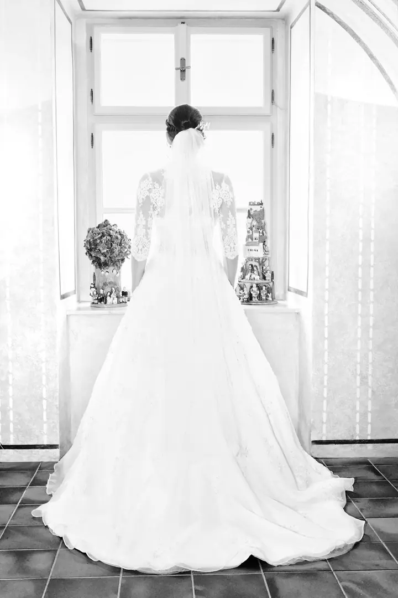
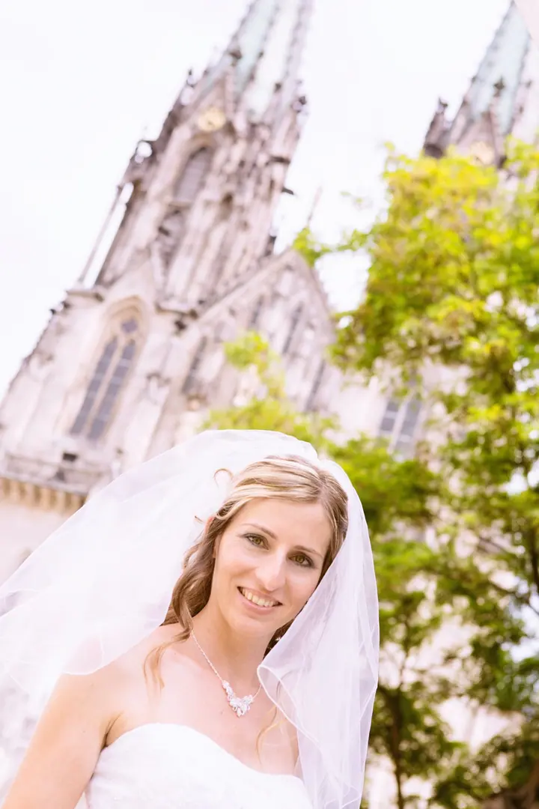
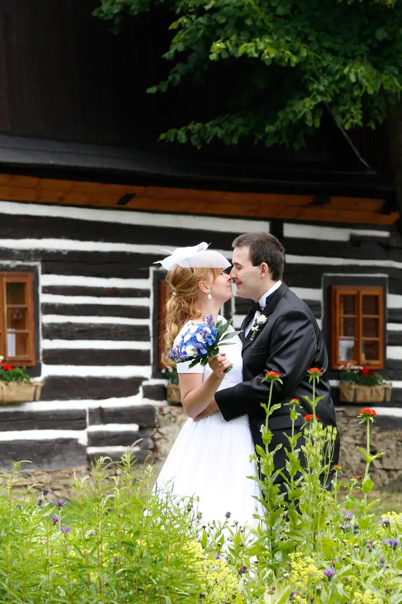
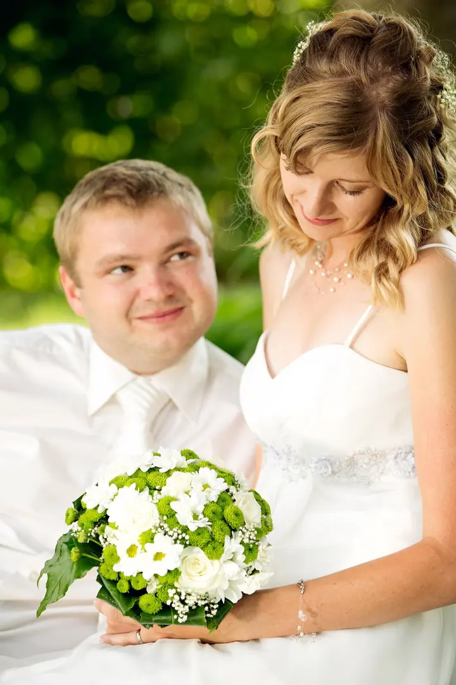
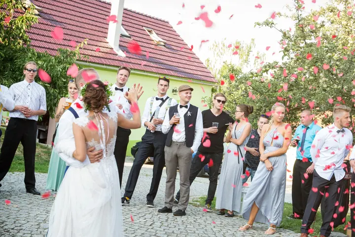

jedna
Svatby
Fotím svatební den od přípravy přes obřad až po hostinu a společné focení novomanželů. Všechny upravené fotky pak najdete v privátní galerii.


Jmenuji se Tomáš Mikulka a jsem svatební fotograf z Olomouce. Fotím svatby od prvních příprav až po večerní oslavu a na přání přivezu i fotokoutek, ve kterém se vyřádí vaši hosté.
Více o mně
Co fotím
jedna
Fotím svatební den od přípravy přes obřad až po hostinu a společné focení novomanželů. Všechny upravené fotky pak najdete v privátní galerii.
Na svatbu můžu přivézt i fotokoutek, kde se hosté vyfotí sami, ve dvojicích nebo s celou partou. Fotky z fotokoutku dostanete v samostatné galerii.
Kromě svateb fotím i rodiny. Klidné focení, ze kterého si odnesete upravené fotky připravené k tisku.
Fotím i ty nejmenší, aby vám zůstala vzpomínka na první dny s miminkem.
Všechny fotky z vašeho dne, upravené a připravené k tisku.


Za objektivem
Pod značkou Fotomikulka se věnuji hlavně svatební a portrétní fotografii. Nejraději fotím v přirozeném světle venku, v parku, u staré chalupy nebo klidně v kukuřičném poli, pokud k vám takové místo patří.
Ke svatbě můžu nabídnout i fotokoutek. Hosté se v něm fotí sami a vy pak máte vedle fotek ze dne i spoustu veselých snímků svých blízkých, které byste jinak neviděli.
Kromě svateb fotím i rodiny a miminka. Všechny fotky dostanete upravené v privátní galerii chráněné heslem a když si vyberete ty nejlepší, rád vám zajistím i jejich tisk.
Tomáš
Zavolejte mi nebo napište přes formulář. Probereme datum, místo a jestli k focení chcete i fotokoutek.
Fotím průběh dne i společné portréty novomanželů. Pokud jste si objednali fotokoutek, postavím ho tak, aby si ho hosté užili po celý večer.
Upravené fotky najdete v privátní galerii pod heslem, které si sami zvolíte. Galerie je dostupná 3 měsíce a můžete ji sdílet, s kým chcete.
Stačí mi poslat čísla vybraných fotografií a já zajistím tisk ve formátu 10 × 15, 13 × 18 nebo v jiném podle vašeho přání.
Portfolio
Otázky
Fotokoutek přivezu a připravím na místě oslavy. Hosté se v něm fotí sami a fotky z něj dostanete v samostatné galerii.
Privátní galerie je dostupná 3 měsíce. Obsahuje všechny upravené fotografie a můžete si je prohlížet po stránkách nebo jako slideshow.
Ano. Galerie je chráněná heslem, které si zvolíte sami, takže ji můžete sdílet, s kým budete chtít.
Ano. Pošlete mi čísla fotek, které chcete vytisknout, a já zajistím tisk v běžných formátech 10 × 15 a 13 × 18 i v dalších podle vaší domluvy.
Napište pár vět o tom, co si představujete. · +420 777 938 582